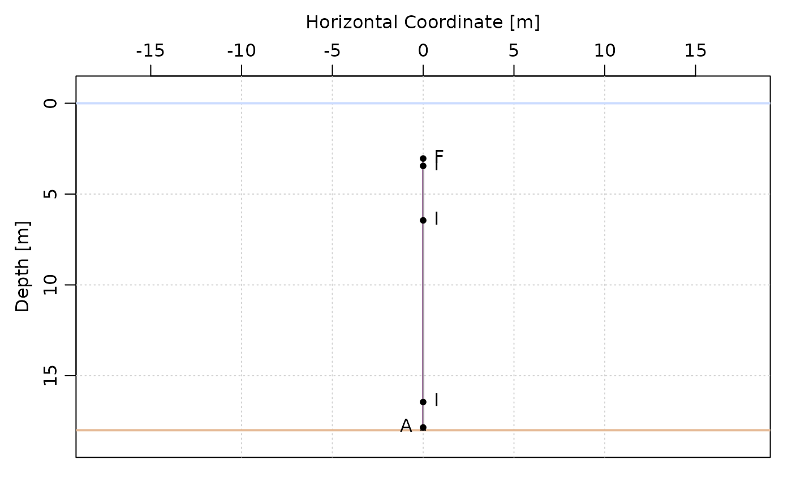
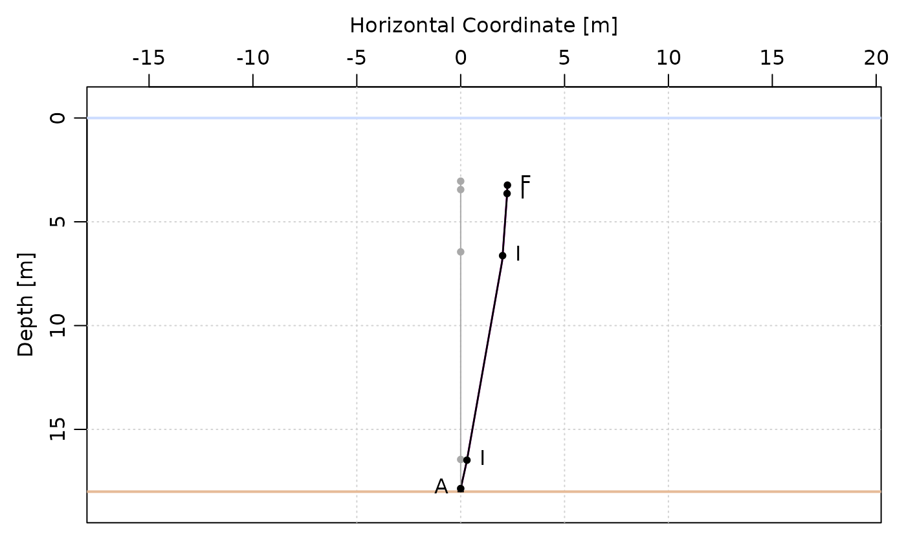

Generates a mooring object, which can be used with the mooring package
to assess current knockdown and tension on the line (e.g., required anchor
weight).
Usage
ss_model_mooring(
station,
depl_date,
metadata = NULL,
rope_type = "3/8in leaded polypropylene"
)Arguments
- station
Character string. Station name, as it appears in
metadata.- depl_date
Character string of the deployment date, in the order "yyyy-mm-dd".
- metadata
Default
NULLwill read in the metadata tracking sheet from the CMAR shared drive (user must be connected to the Perennia VPN). Otherwise, a data frame with the relevant columns may be included (instrument, sensor_depth_m, sounding_m, vr2ar_lug_height_above_seafloor_m, anchor_type, float_type). Instrument, anchor type, and float_type must be compatible with themooringpackage.- rope_type
Character string. Default is "3/8in leaded polypropylene". Must be compatible with the
mooringpackage.
Details
For details on the model, see help files for the mooring package.
With the default arguments, string model is built using information from the metadata tracking sheet (sensor types and depth, anchor and float type).
Assumptions:
In the case where a hobo sensor was attached to the VR2AR sensor, the hobo sensor is not included.
Does not distinguish between VR2AR and VR2AR-X sensors.
The bottom float is NOT included.
The rope length from the float to the shallowest sensor is hard-coded at 0.05 m.
If the sounding is shallower than the deepest sensor, the sounding is set to the deepest depth + 2 m.
Examples
if (requireNamespace("mooring", quietly = TRUE)) {
# The default (metadata = NULL) reads the metadata tracking sheet from the
# CMAR R drive. Here, the metadata for one deployment are supplied directly.
# Instrument, anchor, and float names must match the mooring package
# (see mooring::instrument("?"), mooring::anchor("?"), mooring::float("?")).
metadata <- data.frame(
station = "Borgles Island",
deployment_date = as.Date("2019-05-30"),
instrument = c("Hobo Temp U22", "aquaMeasure DOT", "VR2AR reciever"),
sensor_depth_m = c(2, 5, 15),
sounding_m = 18,
vr2ar_lug_height_above_seafloor_m = 1,
anchor_type = "1 Railway Wheel",
float_type = "14in centre hole tfloat"
)
m <- ss_model_mooring(
station = "Borgles Island", depl_date = "2019-05-30", metadata = metadata
)
summary(m)
plot(m)
# e.g., knockdown in a 0.5 m/s current
m_knockdown <- mooring::knockdown(m, u = 0.5)
print(mooring::depth(m_knockdown))
plot(m_knockdown)
}
#> Mooring in 18m of water that has 9 elements, listed from the top down:
#> 1: "14in centre hole tfloat" float, buoyancy 18.04kg, height 0.356m, area 0.099315m^2
#> 2: "3/8in leaded polypropylene" wire, buoyancy -0.000885kg, length 0.05m, area 0.00047625m^2
#> 3: "Hobo Temp U22" instrument, buoyancy 0.0133kg, height 0.114m, area 0.00342m^2
#> 4: "3/8in leaded polypropylene" wire, buoyancy -0.0510822kg, length 2.886m, area 0.0274892m^2
#> 5: "aquaMeasure DOT" instrument, buoyancy -0.154kg, height 0.274m, area 0.0137m^2
#> 6: "3/8in leaded polypropylene" wire, buoyancy -0.17215kg, length 9.726m, area 0.0926401m^2
#> 7: "VR2AR reciever" instrument, buoyancy -0.5kg, height 0.401m, area 0.032481m^2
#> 8: "3/8in leaded polypropylene" wire, buoyancy -0.0177kg, length 1m, area 0.009525m^2
#> 9: "1 Railway Wheel" FIXME anchor, buoyancy -350kg, height 0.15m

#> [1] 3.233502 3.589170 3.639122 3.752997 6.631342 6.904319 16.481988
#> [8] 16.874110 17.850000
